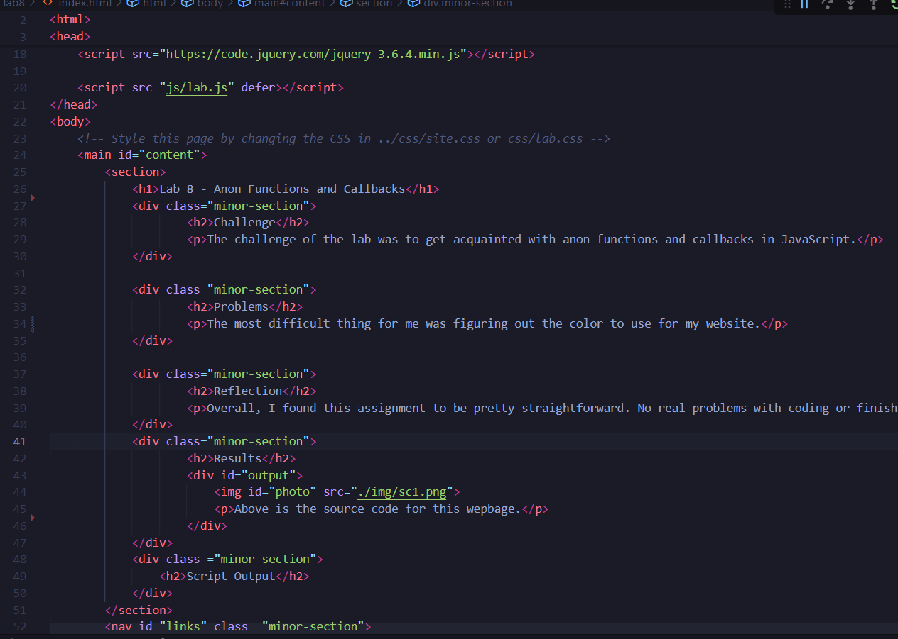
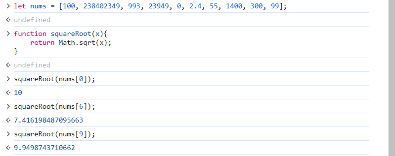
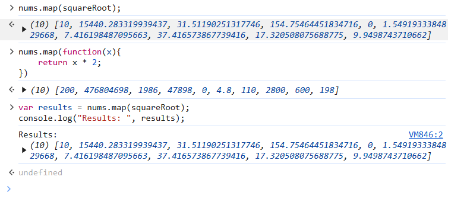
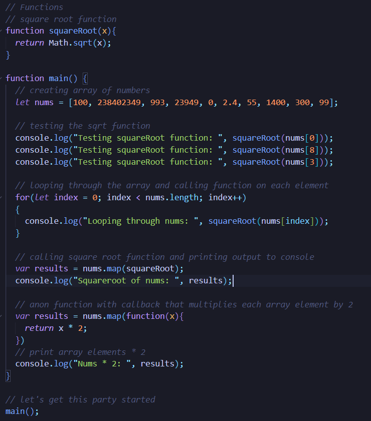
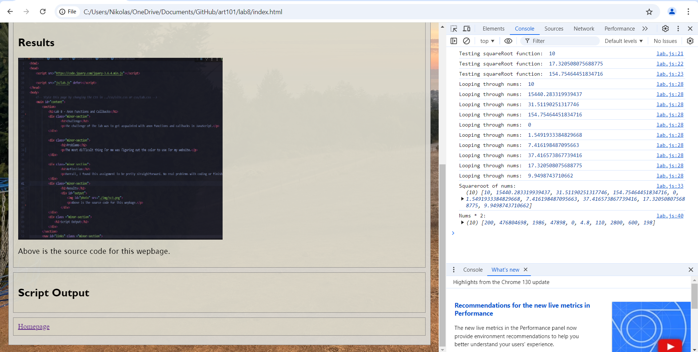
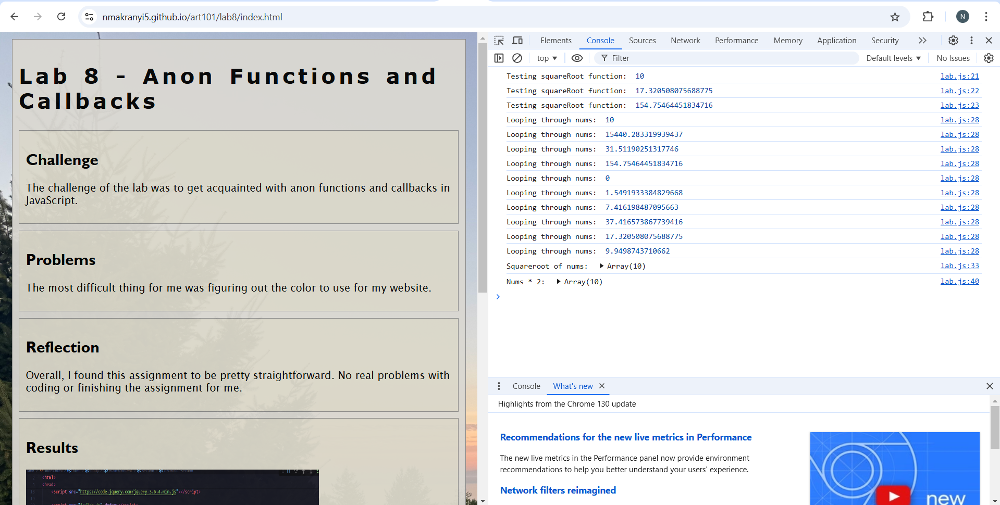

Lab 8 - Anon Functions and Callbacks
Challenge
The challenge of the lab was to get acquainted with anon functions and callbacks in JavaScript.
Problems
The most difficult thing for me was figuring out the color to use for my website.
Reflection
Overall, I found this assignment to be pretty straightforward. No real problems with coding or finishing the assignment for me.
Results

Above is the source code for this wepbage.
 JS code in my console.
JS code for this lab.
Console output for my local webpage.
Console output for my GitHub page.